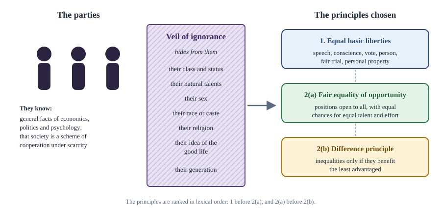

Chapter 6: Justice¶
From Plato to Rawls, Nozick and Sen: what a just society owes its members
Learning outcomes
When you have finished this chapter you should be able to:
- distinguish distributive, corrective, procedural and social justice;
- outline the classical ideas of justice of Plato and Aristotle and the utilitarian approach, with its main criticisms;
- explain Rawls's original position, the veil of ignorance and his two principles of justice, and apply the difference principle;
- explain Nozick's entitlement theory, the Wilt Chamberlain argument and his defence of the minimal state;
- explain Sen's capability approach and his distinction between transcendental and comparative theories of justice;
- state the communitarian and feminist criticisms of liberal theories of justice.
6.1 What is justice about?¶
Justice is often called the first virtue of social institutions. When we call a law, a policy or a social arrangement unjust, we mean more than that it is unwise or unkind: we mean that it wrongs someone, that it fails to give people what they are due. The ancient Roman jurists defined justice as the constant and perpetual will to render to each his due. The difficulty, of course, is to say what each person is due.
It helps to distinguish several kinds of justice.
| Kind | Question | Example |
|---|---|---|
| Distributive justice | How should benefits and burdens be shared among members of a society? | Who should pay how much tax; who should receive health care |
| Corrective (rectificatory) justice | How should a wrong be put right? | Compensation for damage; restitution of stolen property |
| Retributive justice | What punishment does wrongdoing deserve? | Sentencing criminals |
| Procedural justice | Are the procedures by which decisions are made fair? | A fair trial; a fair election; a fair competition |
| Social justice | Is the overall structure of society, including its distribution of wealth, status and opportunity, fair? | Policies against poverty, caste and gender discrimination |
Table 6.1. Kinds of justice.
This chapter is mainly about distributive and social justice: the justice of the basic arrangements of society that shape people's prospects from birth.
Procedural and outcome-based justice¶
Rawls drew a helpful distinction. In perfect procedural justice, there is an independent standard of a fair outcome and a procedure guaranteed to reach it: to divide a cake equally, let the person who cuts it take the last piece. In imperfect procedural justice, there is an independent standard but no procedure guaranteed to reach it: a criminal trial aims to convict all and only the guilty, but sometimes fails. In pure procedural justice, there is no independent standard; whatever results from a fair procedure is fair, as in a fair lottery or a fair bet. Theories of justice differ in how far they treat justice as a matter of fair procedure (Nozick) or of fair outcomes.
6.2 Classical ideas¶
Plato¶
In the Republic, Plato rejected the view that justice is simply the interest of the stronger (argued by the character Thrasymachus) or a convenient agreement among the weak. He argued that justice in the city, as in the soul, is a kind of harmony: each part does its own proper work. The ideal city has three classes (rulers, auxiliaries who defend it, and producers), corresponding to reason, spirit and appetite in the soul. The city is just when each class performs its function and does not interfere with the others, and when the wise rule. Critics, most famously Karl Popper in The Open Society and Its Enemies (1945), saw in this a blueprint for a rigid, authoritarian society.
Aristotle¶
Aristotle distinguished distributive justice, which concerns the division of honours, wealth and other goods among members of a community, from corrective justice, which concerns transactions between individuals and the rectification of wrongs. Distributive justice is proportional: goods should be shared in proportion to merit or desert. Equals should receive equal shares, unequals unequal shares. The difficulty, Aristotle saw, is that people disagree about what counts as merit: democrats say free birth, oligarchs say wealth, aristocrats say virtue. Corrective justice, by contrast, is arithmetical: it restores the balance between the parties whatever their merit.
6.3 Utilitarianism¶
Utilitarianism holds that the right action or policy is the one that produces the greatest total happiness (or well-being, or preference satisfaction). Its founder, Jeremy Bentham (1748–1832), opened his Introduction to the Principles of Morals and Legislation (1789) with the claim that nature has placed mankind under the governance of two sovereign masters, pain and pleasure. J. S. Mill refined the theory, distinguishing higher and lower pleasures. For utilitarians, justice is not a separate value but a name for those rules (such as respecting property and keeping promises) that generally promote utility.
Utilitarianism was a reforming doctrine. It judged laws by their effects on human welfare rather than by tradition or religion, it counted everyone's happiness equally ("everybody to count for one, nobody for more than one", a principle attributed to Bentham), and it supported reforms of the criminal law, the franchise and the treatment of animals.
Its critics raise three main objections.
- It ignores the separateness of persons. Maximising the total allows great sacrifices by some for larger gains to others. A policy that made a minority very miserable would be justified if it made the majority a little happier, by enough in total. Rawls argued that utilitarianism treats society as if it were one person balancing present against future satisfactions, and so does not take seriously the distinction between persons.
- It does not protect rights. In principle utilitarianism could justify punishing an innocent person or suppressing an unpopular minority, if that produced more total happiness (Chapter 1, Worked example 1.2).
- It is indifferent to distribution. Two distributions with the same total are equally good, however unequally the total is shared.
Utilitarians have replies. Rule utilitarians argue that we should follow the rules (including rules protecting rights) whose general acceptance would maximise utility, which would rarely permit punishing the innocent. Utilitarians also point out that money matters less to the rich than to the poor (diminishing marginal utility), so maximising total welfare usually favours redistribution. But the basic objection, that the theory does not treat individuals as having claims that cannot be outweighed by others' gains, motivated the theory that dominated late twentieth-century discussion.
6.4 Rawls: justice as fairness¶
John Rawls (1921–2002) set out his theory in A Theory of Justice (1971) and revised it in later works, including Political Liberalism (1993) and Justice as Fairness: A Restatement (2001). He called it justice as fairness. Its subject is the basic structure of society: the main political, economic and social institutions (the constitution, the legal system, the economy, the family) that distribute rights and duties and shape people's life prospects from the start.
Society as a fair system of cooperation¶
Rawls saw society as a cooperative venture for mutual advantage among free and equal citizens. Cooperation produces benefits that no one could achieve alone, and the question is how to divide them. Since people's starting positions in society are largely a matter of luck (the family, class and country into which they are born, and the natural talents they happen to have), Rawls argued that these factors, which are "arbitrary from a moral point of view", should not determine people's shares.
The original position and the veil of ignorance¶
To find fair principles, Rawls used a thought experiment in the social contract tradition. Imagine representatives of citizens meeting in an original position to choose the principles that will govern their society. They are rational and mutually disinterested (each wants to do well for the person they represent). Crucially, they choose behind a veil of ignorance: they do not know their own place in society, class or social status, their natural talents and strength, their sex, race or religion, or even their particular idea of what makes a life good. They know general facts about society, economics and psychology.
The veil removes the influence of bias. If you do not know whether you will be rich or poor, a member of the majority religion or of a minority, able-bodied or disabled, you cannot choose principles that favour your own position. The principles chosen will therefore be fair to everyone. The original position is hypothetical: it is a device for testing principles, not a story about how societies began.
The parties choose among primary goods: things that any rational person is presumed to want, whatever else they want, because they are useful for any plan of life. Rawls listed basic rights and liberties, freedom of movement and choice of occupation, powers and prerogatives of offices, income and wealth, and the social bases of self-respect.

The two principles¶
Rawls argued that the parties would choose two principles. In plain words, following his later formulation:
- The liberty principle. Everyone has an equal right to the most extensive and adequate set of basic liberties that can be secured for all alike. (The basic liberties include political liberty, freedom of speech and assembly, liberty of conscience and freedom of thought, freedom of the person, the right to hold personal property, and freedom from arbitrary arrest.)
- Social and economic inequalities are permissible only if they meet two conditions:
- (a) fair equality of opportunity: the positions and offices to which they are attached are open to all, with genuinely equal chances for people of similar talent and effort; and
- (b) the difference principle: they work to the greatest benefit of the least advantaged members of society.
The principles are in lexical order: the first principle has priority over the second, and within the second, fair equality of opportunity has priority over the difference principle. Basic liberties may not be traded for economic gains. A society may not deny some citizens the vote or freedom of religion, even if this would make everyone richer.
The difference principle¶
The difference principle is the most distinctive and controversial part of the theory. It does not require equality. It permits inequalities, but only if they work to the advantage of the worst-off group. If paying doctors or entrepreneurs more gives them incentives to work harder or innovate, producing more wealth that raises the position of the least advantaged, the inequality is just. If an inequality benefits the better-off without improving the position of the worst-off, it is unjust.
Why would the parties choose it? Rawls argued that, facing a choice of such importance under deep uncertainty, with no basis for estimating probabilities, and with some possible outcomes intolerable, rational parties would follow the maximin rule: choose the option whose worst outcome is best. Since any of them might turn out to be among the least advantaged, they would want the worst position to be as good as possible.
| System | Least advantaged | Middle | Most advantaged | Total |
|---|---|---|---|---|
| Strict equality | 10 | 10 | 10 | 30 |
| Incentive scheme | 14 | 20 | 35 | 69 |
| Laissez-faire | 8 | 25 | 60 | 93 |
Table 6.2. Three economic systems: index of primary goods for three equal social groups.
Worked example 6.1: Applying the difference principle
Situation. A society can adopt one of the three economic systems of Table 6.2. The numbers are the average primary goods (an index) of three social groups of equal size.
Analysis. Utilitarianism (maximising the total) chooses laissez-faire (93). Strict equality chooses equality, though everyone could be better off. The difference principle chooses the incentive scheme: its least advantaged group (14) is better off than in either alternative. The inequality in the incentive scheme is justified because it raises the position of the worst off; the larger inequality of laissez-faire is not, because the worst off do worse (8) than under strict equality.
Political liberalism¶
In Political Liberalism (1993) Rawls addressed a problem he had underplayed: modern societies are marked by reasonable pluralism, a diversity of religious, philosophical and moral doctrines held by reasonable people. A just and stable society cannot be founded on any one of them. Rawls argued that justice as fairness should be presented as a political conception that citizens holding different comprehensive doctrines can endorse from within their own views, forming an overlapping consensus. When citizens debate fundamental political questions, they should offer reasons that others could reasonably accept (public reason), not reasons that depend on their own religion alone. Critics ask whether this asks religious citizens to leave their deepest convictions out of politics (Chapter 10).
Criticisms of Rawls¶
- From the libertarian right, Nozick argued that Rawls ignores how holdings came about and violates people's rights over themselves and their property (section 6.5).
- From the egalitarian left, G. A. Cohen argued that the incentive argument is suspect: if talented people would work just as hard for less pay but demand more, inequality reflects their bargaining power, not a necessity. A just society would require an egalitarian ethos in personal choices, not only just institutions.
- Communitarians argued that the parties behind the veil are abstract selves without the attachments that make up real people (section 6.7).
- Feminists argued that Rawls did not apply his principles fully to the family (section 6.7).
- Sen argued that Rawls's focus on perfectly just institutions and on primary goods is misplaced (section 6.6).
- Some question maximin itself: rational people might accept a small risk of being slightly worse off for a high chance of being much better off.
Key idea
Rawls asks what principles free and equal people would choose if they did not know their place in society. His answer: equal basic liberties first, then fair equality of opportunity, then the difference principle, which permits inequalities only when they benefit the least advantaged.
6.5 Nozick: entitlement and the minimal state¶
Robert Nozick (1938–2002) replied to Rawls in Anarchy, State, and Utopia (1974), a defence of libertarianism. He began from the claim that individuals have rights, and that there are things no person or group may do to them without violating their rights. Rights are side constraints: they limit what others, including the state, may do in pursuit of any goal, however good. Each person owns himself: his body, talents and labour. From this Nozick argued that only a minimal state, limited to protecting people against force, theft and fraud and enforcing contracts, can be justified. Any more extensive state violates people's rights.
The entitlement theory¶
Nozick's theory of justice in holdings has three parts.
- Justice in acquisition: how people may justly come to own previously unowned things. Nozick followed Locke, who argued that a person who mixes his labour with unowned land makes it his property, provided that "enough, and as good" is left for others (the Lockean proviso). Nozick accepted a weakened version: an acquisition is unjust if it makes others worse off than they would have been if the thing had remained unowned.
- Justice in transfer: how people may justly transfer holdings to others, by voluntary exchange, gift or bequest.
- Rectification of injustice: how past injustices in acquisition or transfer (theft, fraud, conquest, enslavement) should be corrected.
A distribution is just if everyone is entitled to what they hold under these principles, whatever the resulting pattern. If it arose by just steps from a just situation, it is just, however unequal.
Historical and patterned principles¶
Nozick distinguished historical principles, which judge a distribution by how it came about, from end-state or patterned principles, which judge it by its shape at a given moment ("to each according to need", "to each according to merit", "maximise the position of the worst off"). Rawls's difference principle, utilitarianism and most egalitarian principles are patterned. Nozick argued that any patterned principle can be maintained only by continual interference in people's lives.
The Wilt Chamberlain argument¶
To illustrate, Nozick asked us to start from any distribution we regard as just; call it D1. Wilt Chamberlain, a famous basketball player of the time, signs a contract under which each spectator at his games drops a small sum into a box for him. Over a season a million people freely do so, and Chamberlain ends up much richer than anyone else, producing a new, unequal distribution D2. Is D2 unjust? Everyone was entitled to their holdings under D1; they chose freely to transfer some of it to Chamberlain; no one else's holdings were affected. Nozick concluded that liberty upsets patterns: to keep any pattern, the state would have to forbid "capitalist acts between consenting adults" or continually take from people what others have freely given them.
Taxation¶
Nozick argued that taxation of earnings from labour to fund redistribution is on a par with forced labour. If the state takes the earnings of so many hours of a person's work, it is in effect forcing him to work those hours for others; it makes others partial owners of him. Taxation to fund the minimal state's protective functions is legitimate; taxation for welfare is not.
Criticisms of Nozick¶
- The starting point. The theory needs just original acquisition, but almost all present holdings descend from conquest, enslavement, colonial seizure or fraud somewhere in their history. Nozick admitted that rectification might, in practice, justify substantial redistribution, perhaps even something like the difference principle as a rough rule of thumb, but gave no detailed account.
- Self-ownership. Critics question whether self-ownership implies full ownership of external resources. G. A. Cohen, in Self-Ownership, Freedom, and Equality (1995), argued that even if people own themselves, the world's resources were originally owned in common or by no one, and appropriating them limits others' freedom.
- Freedom. A poor person in a libertarian society may have formal rights but few real options. If freedom matters, critics say, it matters for everyone, and a minimal state may leave many people with very little of it.
- The Chamberlain example. Critics argue that the transfers have effects beyond the parties: Chamberlain's wealth may give him power over others, and spectators did not consent to the resulting inequality of power. Others note that a tax system known in advance is part of the background against which contracts are made.
6.6 Sen: capabilities and realisations¶
Amartya Sen (born 1933), an economist and philosopher who received the Nobel Memorial Prize in Economic Sciences in 1998, developed the capability approach in a series of works, including Commodities and Capabilities (1985), Inequality Reexamined (1992), Development as Freedom (1999) and The Idea of Justice (2009).
Functionings and capabilities¶
- A functioning is something a person does or is: being adequately nourished, being in good health, being literate, taking part in the life of the community, appearing in public without shame.
- A capability is the real freedom to achieve a combination of functionings: the set of lives a person could actually choose to live.
Sen argued that justice and development should be judged by people's capabilities, not by their income or resources (as in Rawls's primary goods) or by their happiness (as in utilitarianism). Two reasons are central.
- Conversion factors. People differ greatly in their ability to convert resources into functionings because of personal features (age, disability, pregnancy), environment (climate, disease) and social circumstances (discrimination, public services). Equal incomes can mean very unequal capabilities.
- Adaptive preferences. People who have lived with deprivation may learn to want little and report contentment. Measuring happiness would then hide their deprivation.
The capability approach influenced the Human Development Index published by the United Nations Development Programme since 1990, which combines indicators of life expectancy, education and income instead of relying on income alone. The philosopher Martha Nussbaum developed a version that lists ten central capabilities (including life, bodily health, bodily integrity, practical reason, affiliation, and control over one's environment) which, she argued, every just constitution should guarantee to every citizen up to a threshold. Sen himself declined to fix a single list, arguing that the selection and weighting of capabilities should be a matter for public reasoning in each society.
Transcendental and comparative justice¶
In The Idea of Justice Sen criticised what he called transcendental institutionalism: the approach of Hobbes, Rousseau, Rawls and others that seeks to identify perfectly just institutions. He favoured a comparative, realisation-focused approach, in the tradition of thinkers such as Adam Smith, Condorcet, Mary Wollstonecraft and Mill, which asks how to make the world less unjust by comparing feasible alternatives and attending to the lives people actually lead. Sen used an analogy from art: knowing which painting is the best in the world does not tell us how to rank two other paintings against each other, and we can compare two paintings without first identifying a perfect one. In the same way, we do not need a theory of perfect justice to know that abolishing slavery or ending famine reduces injustice.
Sen drew on two Sanskrit words from Indian jurisprudence: nīti, organisational propriety and correct rules and institutions, and nyāya, the realised justice of the lives people actually live. He argued that justice must be concerned with nyāya, not only nīti.
Worked example 6.2: Sen's three children and a flute
Situation. Sen's own illustration in The Idea of Justice. Three children, Anne, Bob and Carla, quarrel over a flute. Anne says it should be hers because she is the only one who knows how to play it. Bob says it should be his because he is so poor that he has no toys at all. Carla says it should be hers because she made it, with months of labour.
Analysis. Each claim reflects a serious approach to justice. A utilitarian might give the flute to Anne, who will get the most enjoyment from it. An economic egalitarian might give it to Bob, the worst off. A libertarian, emphasising entitlement to the fruits of one's labour, would give it to Carla. Sen's point is that there may be no single impartial answer that all reasonable people must accept; several principles survive critical scrutiny. Public reasoning may still rank some alternatives, and we can agree on removing obvious injustices without settling every such dispute.
Criticisms of Sen¶
Critics ask how capabilities are to be measured and compared, since they are freedoms rather than observed achievements. Others argue that without a list (like Nussbaum's) the approach is too indeterminate to guide policy, while with a list it risks imposing one view of the good life. Some Rawlsians reply that primary goods are used precisely because they are publicly measurable, and that Rawls's theory can accommodate many of Sen's concerns.
| Rawls | Nozick | Sen | |
|---|---|---|---|
| Main work | A Theory of Justice (1971) | Anarchy, State, and Utopia (1974) | The Idea of Justice (2009) |
| Starting point | Fair cooperation among free and equal persons | Individual rights and self-ownership | Real freedoms people have to live lives they value |
| What is distributed | Primary goods | Holdings acquired and transferred justly | Capabilities |
| Kind of principle | Patterned (difference principle) within fair procedures | Historical, procedural | Comparative, realisation-focused |
| Role of the state | Secure liberties, fair opportunity, benefit the least advantaged | Minimal: protection and contracts only | Expand capabilities; public reasoning sets priorities |
| Main criticism | Ignores entitlements (Nozick); abstract self (communitarians) | Unjust starting points; neglects real freedom | Indeterminate; hard to measure |
Table 6.3. Rawls, Nozick and Sen compared.
6.7 Communitarian and feminist criticisms¶
Communitarians¶
In the 1980s several philosophers, later grouped together as communitarians, criticised liberal theories of justice. Michael Sandel (Liberalism and the Limits of Justice, 1982) argued that Rawls's parties behind the veil are unencumbered selves, imagined apart from the attachments, loyalties and shared purposes that actually constitute persons; we cannot coherently think of ourselves that way. Alasdair MacIntyre (After Virtue, 1981) argued that moral reasoning makes sense only within traditions and practices. Michael Walzer (Spheres of Justice, 1983) argued that different goods (health care, education, political office, money, love) have different social meanings and should be distributed by different principles; injustice occurs when success in one sphere, typically money, is converted into domination in others. Communitarians do not usually reject liberal rights, but they argue that justice must be rooted in a community's shared understandings and that the common good deserves more weight.
Feminists¶
Susan Moller Okin, in Justice, Gender, and the Family (1989), argued that theories of justice had largely ignored the family, assuming that it is just or that it lies outside the scope of justice. Yet the family is where children first learn (or fail to learn) a sense of justice, and the gendered division of labour within it shapes women's opportunities throughout life: women's greater share of unpaid care work makes them economically vulnerable. Okin argued that Rawls's theory, applied consistently with sex hidden behind the veil, would require a radical transformation of the family. Other feminists, drawing on an ethics of care (associated with Carol Gilligan's In a Different Voice, 1982), argued that the language of rights and impartial principles neglects the moral importance of relationships, care and responsibility.
Summary
- Justice concerns giving people their due; distributive, corrective, retributive, procedural and social justice address different questions.
- Plato saw justice as each part doing its proper work; Aristotle distinguished proportional distributive justice from arithmetical corrective justice.
- Utilitarianism maximises total happiness; it is criticised for ignoring the separateness of persons, rights and distribution.
- Rawls's original position and veil of ignorance lead to two principles in lexical order: equal basic liberties; fair equality of opportunity and the difference principle (inequalities must benefit the least advantaged). Later he developed political liberalism, overlapping consensus and public reason.
- Nozick's entitlement theory is historical: holdings justly acquired and transferred are just whatever the pattern. Liberty upsets patterns (Wilt Chamberlain); redistributive taxation is on a par with forced labour; only a minimal state is justified.
- Sen's capability approach judges justice by people's real freedoms to achieve valued functionings, and favours comparative, realisation-focused reasoning (nyāya over nīti). Nussbaum proposed a list of ten central capabilities.
- Communitarians criticise the unencumbered self and abstract universal principles; feminists criticise the neglect of the family and of care.
6.8 Exercises¶
Exercise 1
Explain the difference between pure and imperfect procedural justice, with an example of each.
Answer
In pure procedural justice there is no independent standard of the right outcome; any outcome of a fair procedure is fair, as in a fair lottery. In imperfect procedural justice there is an independent standard but no procedure guaranteed to achieve it, as in a criminal trial, which aims to convict all and only the guilty but can make mistakes.
Exercise 2
Why does Rawls say that utilitarianism does not take seriously the distinction between persons?
Answer
Utilitarianism adds up everyone's happiness and maximises the total, so one person's loss can be outweighed by others' gains, as if society were a single person trading off present against future satisfactions. But persons are separate: a loss to one is not compensated by a gain to another. Rawls's principles give each person claims (basic liberties, a position as good as possible for the worst off) that cannot be sacrificed for the greater total.
Exercise 3
List four things the parties in the original position do not know, and explain why the veil of ignorance is meant to produce fair principles.
Answer
They do not know (any four): their class or social status, their natural talents and strength, their sex, their race, their religion, their conception of the good. Because they cannot tell which principles would favour themselves, they cannot tailor principles to their own advantage; principles chosen under these conditions are therefore impartial between all positions in society.
Exercise 4
A society can choose between system X (groups have 12, 18 and 30) and system Y (groups have 11, 30 and 50). Which would the difference principle choose? Which would a utilitarian choose?
Answer
The difference principle chooses X, because its least advantaged group (12) is better off than Y's (11). A utilitarian maximising the total chooses Y (total 91, against 60 for X).
Exercise 5
Summarise the Wilt Chamberlain argument and give one objection to it.
Answer
Start from any distribution regarded as just. Many people freely pay a small sum to watch Chamberlain play, and he becomes much richer than others. Since each person was entitled to their holdings and transferred them freely, the new unequal distribution seems just too. So liberty upsets patterns, and maintaining any pattern requires continual interference. Objection: the transfers have effects on third parties, such as the concentration of wealth and power that may disadvantage others who did not consent; also, a tax system known in advance is part of the fair background of all transactions, so taxing Chamberlain does not upset legitimate expectations.
Exercise 6
Explain the difference between a functioning and a capability, and why Sen preferred capabilities to income as a measure of well-being.
Answer
A functioning is an achieved state of doing or being (being nourished, being literate). A capability is the real freedom to achieve such functionings. Sen preferred capabilities because people differ in converting income into functionings (a disabled person needs more income for the same mobility; a person in a disease-prone area needs more for the same health), and because focusing on capabilities respects freedom of choice: a person who fasts by choice is not deprived like one who starves.
Exercise 7
State the communitarian criticism of the "unencumbered self" and Okin's feminist criticism of theories of justice.
Answer
Communitarians (Sandel) argue that Rawls imagines persons as unencumbered selves who choose principles prior to and apart from their attachments, but real persons are partly constituted by their communities, loyalties and shared purposes. Okin argues that theories of justice ignored the family, though it is the first school of justice and its gendered division of labour shapes women's opportunities; a consistent theory of justice must apply to the family.
6.9 Quiz¶
Check yourself: justice
Exercise 1
Which principle permits social and economic inequalities only if they benefit the least advantaged?
- The liberty principle
- The difference principle
- The harm principle
- The Lockean proviso
Answer
The difference principle
Exercise 2
In Rawls's theory, which principle has priority?
- The difference principle
- Fair equality of opportunity
- Equal basic liberties
- Maximising total utility
Answer
Equal basic liberties
Exercise 3
Which basketball player did Nozick use in his famous example? (surname)
Answer
Chamberlain / Wilt Chamberlain
Exercise 4
Nozick's entitlement theory is an example of a
- patterned principle
- historical principle
- end-state principle
- utilitarian principle
Answer
historical principle
Exercise 5
Match each term with its theorist.
| A | B |
|---|---|
| Veil of ignorance | Sen |
| Minimal state | Walzer |
| Capability approach | Rawls |
| Spheres of justice | Nozick |
Answer
Veil of ignorance — Rawls; Minimal state — Nozick; Capability approach — Sen; Spheres of justice — Walzer
Exercise 6
In Sen's terms, nyāya refers to
- correct rules and institutions
- the realised justice of people's actual lives
- the duty of kings
- the law of the jungle
Answer
the realised justice of people's actual lives
Exercise 7
Who argued in Justice, Gender, and the Family (1989) that theories of justice neglected the family?
- Martha Nussbaum
- Susan Moller Okin
- Carol Gilligan
- Iris Marion Young
Answer
Susan Moller Okin
Exercise 8
Which index of the UNDP was influenced by the capability approach?
- Gini coefficient
- Human Development Index
- Consumer Price Index
- Gross Domestic Product
Answer
Human Development Index